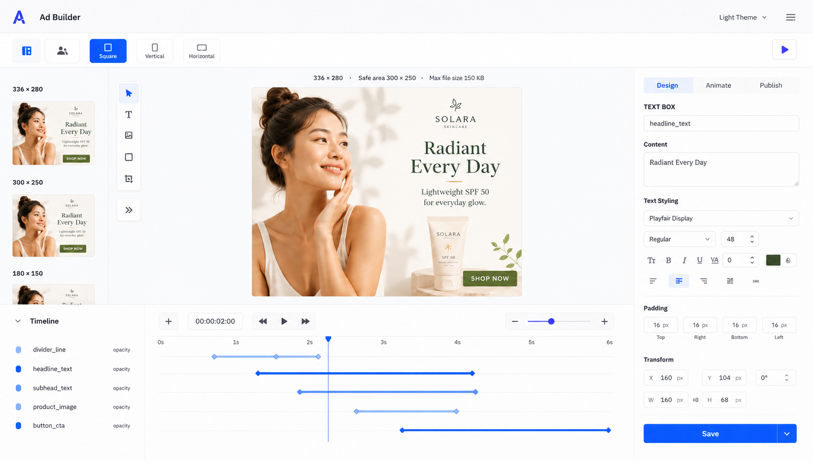

AI Creative Production Platform
A production creative tool for people making real ads, shaped from messy workflow ambiguity into AI-assisted concepting, layout, editing, and brand-quality evals.
The ambiguous ask
Creative production had outgrown the tools around it. Every new ad variation still asked a designer to do careful, repetitive production work inside Illustrator and Photoshop. The opportunity was not just to add AI; it was to define a product workflow where brand fidelity, usability, and creative control could survive at much higher volume.
The product shape
I led the product architecture for a web-based builder that turns creative intent into production-ready variations. The work sat between product, design, and engineering: preserve what designers meant, make the UX feel direct, and give AI enough structure to be helpful. A homegrown agentic orchestration loop over tiered Gemini models handles concepting, layout, and edits, while production-data bridges — like real-time font-ID lookups — keep output tied to the actual brand system.

The production layer
I built a reusable eval skill so AI features could be judged against the same things creative teams care about: layout accuracy, color fidelity, and visual drift against baselines. A meta-optimizer reads those scores and tunes the prompts, model tier, pipeline steps, and schemas. It turns taste into something the system can keep checking, not something everyone has to rediscover by eye.
The launch signal
The system is in production, fully adopted across the creative org, and now moving into an agent-first refactor. The eval harness stays the trust layer between speed and quality as deterministic orchestration becomes more flexible agentic workflow.